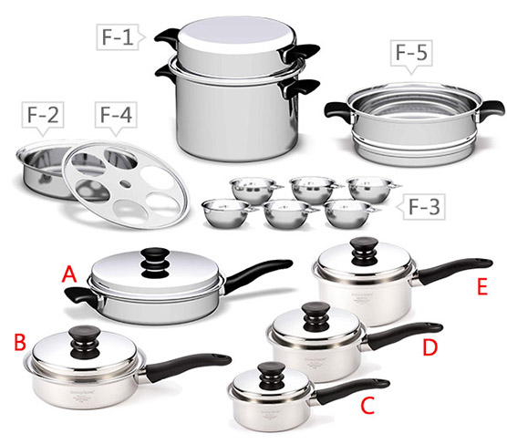
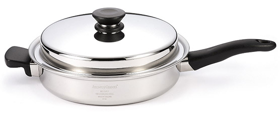
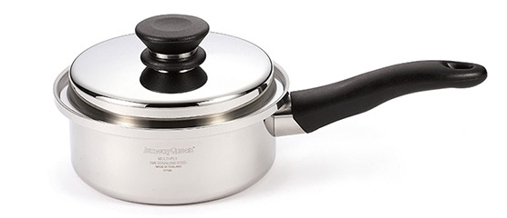
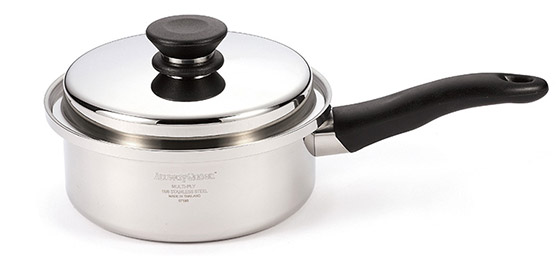

原味複合金鍋
-
完整的 6 組鍋具,每項都有獨特的烹調功能,搭配使用又能變化出各式各樣的美食組合,獻給料理的專手,有了這套鍋具,做菜不但更輕鬆、充滿樂趣,起鍋的佳餚更兼具滿滿食物的原始營養與風味。
-
A煎炸鍋（連蓋）
七層式結構／直徑 28cm ／深度 6cm ／含蓋深度13cm
-
B1.4 公升平底鍋（連蓋）
七層式結構／直徑 22cm ／深度 6cm ／含蓋深度 11cm
-
C1 公升長柄鍋（連蓋）
三層式結構／直徑 18cm ／深度 6cm ／含蓋深度 11cm
-
D2 公升長柄鍋（連蓋）
三層式結構／直徑 20cm ／深度 8cm ／含蓋深度 13cm
-
D3 公升長柄鍋（連蓋）
三層式結構／直徑 22cm ／深度 10cm ／含蓋深度 15cm
-
E6 公升荷蘭式烤鍋
三層式結構／直徑 27cm ／深度 13cm ／含蓋深度 19cm
荷蘭式烤鍋 配件介紹
-
F-1正反兩用烤盤鍋架
直徑26cm/深度 8cm
-
F-2多用途承架
直徑 25cm / 深度 1cm
-
F-3不鏽鋼杯 x 6
直徑 7cm / 深度 3cm
-
F-4焙碟
直徑 23cm / 深度 6cm
-
F-5蒸濾鍋
直徑 26cm / 深度 11cm
-
-
適合單身貴族、兩人世界和小家庭選用的入門鍋具組合，兼具了多種料理方式的煎炸鍋、簡單湯品的中型長柄鍋，與熬製甜點醬汁的小型長柄鍋，可滿足基本生活所需的各種場合，變化出多種菜色。
-
A煎炸鍋（連蓋）
七層式結構 / 直徑 28cm / 深度 6cm / 含蓋深度13cm
 -
B1 公升長柄鍋（連蓋）
三層式結構 / 直徑 18cm / 深度 6cm / 含蓋深度11cm
 -
C 2 公升長柄鍋（連蓋）
三層式結構 / 直徑 20cm / 深度 8cm / 含蓋深度13cm

-
功能介紹
-
提供深、淺各一的不同規格，利用七層式不銹鋼結構，除了簡單的煎炸料理之外，即使是要用到烤箱才能製作的餅乾、蛋糕、麵包，使用安麗煎炸鍋都可輕鬆完成。
-
A煎炸鍋（連蓋）
- 可當炸鍋或煎鍋,若肉類食材本身油脂多時，可無油料理,更健康。
- 七層式結構 / 直徑 28cm / 深度 6cm / 含蓋深度 13cm
-
B1.4公升平柄鍋（連蓋）
- 可作為小煎炸鍋煎煮食物或烹炒鮮蔬野菜，也是烤製小尺寸糕點的首選。
- 七層式結構 / 直徑 22cm / 深度 6cm / 含蓋深度 11cm
-
-
大、中、小三種容量之湯鍋,讓你聰明駕馭各類食材,輕鬆應付生活常見的各種料理挑戰,如家常菜餚、米食與煲湯,甜點類的果醬或中式甜湯等。
-
C1公升長柄鍋（連蓋）
- 小容量甜點鍋,適合調理果醬及烘烤戚風蛋糕、融化巧克力,或烹調少份量的鮮食、嬰兒食品,也是單身料理的最佳幫手。
- 三層式結構 / 直徑 18cm / 深度 6cm / 含蓋深度 11cm
-
D2公升長柄鍋（連蓋）
- 適合烹煮蔬菜、米食或汆燙各類食材；2~3 人小家庭的一餐份量，恰恰好！
- 三層式結構 / 直徑 20cm / 深度 8cm / 含蓋深度 13cm
-
E3公升長柄鍋（連蓋）
- 大容量湯鍋，適合烹調體積較大、較佔空間的蔬果，或多人份量的湯類料理；亦可搭配焙碟使用，同時烹調兩種食材。
- 三層式結構 / 直徑 22cm / 深度 10cm / 含蓋深度 15cm
-
-
容量特大且配件完整,只要單一鍋具就可運用「層疊煮食法」烹調出完整的一餐,特別適合烹煮份量多的米食、麵類、湯料,或用來燉、燜各式食材肉品,甚至是全雞料理也完全不成問題!
-
F6 公升荷蘭式烤鍋
- 適合烹煮份量多的米飯、麵類、湯料,或用來燉、燜各式肉品。
- 三層式結構 / 直徑 27cm / 深度 13cm /含蓋深度 19cm
內含配件
-
F-1正反兩用烤盤鍋蓋：
可做為 6 公升荷蘭式烤鍋的鍋蓋、層疊煮食的底蓋,或翻轉過來作為盛裝器皿。
-
F-2多用途承架：
可搭配煎炸鍋及 6 公升荷蘭式烤鍋使用。
-
F-3不銹鋼杯 × 6：
可作為蒸蛋、或作為烤鬆餅、布丁、果凍的模具。
-
F-4焙碟：
可用來盛裝食物,或搭配 3 公升長柄鍋及 6 公升荷蘭式烤鍋使用。
-
F-5蒸濾鍋：
兼具蒸、濾兩種功能,搭配 6 公升荷蘭式烤鍋使用。
-